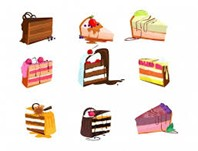
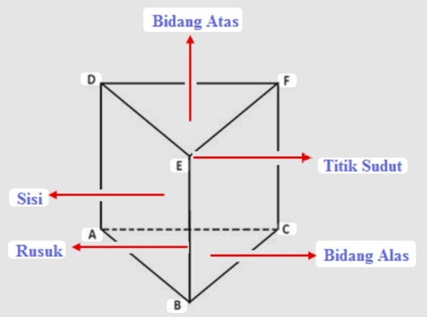

🏕️ Yuk, Jadi Arsitek Cilik!
Lihat deh tenda kemah, atap rumah, atau bahkan potongan kue! Bentuknya keren, kan? Itu adalah contoh Prisma Segitiga.
Prisma segitiga adalah bangun ruang yang punya alas dan tutup (atas) berbentuk segitiga yang sama persis. Di bab ini, kita akan belajar cara menghitung luas selimutnya dan berapa "isi" (volume) di dalamnya!
🎯 Tujuan Kita di Bab Ini
- Bisa menghitung Luas Permukaan prisma segitiga (seperti menghitung kain untuk tenda).
- Bisa menghitung Volume prisma segitiga (seperti menghitung udara di dalam tenda).
- Bisa memecahkan soal cerita yang berhubungan dengan prisma segitiga.
- Menjadi lebih teliti dan bertanggung jawab saat mengerjakan soal!
📚 Yuk, Pahami Materinya!
1. Apa itu Prisma?
Prisma adalah bangun ruang 3D yang punya 2 sisi "kembar" yang sejajar. Coba bayangkan potongan kue keju, tenda kemah, atau atap rumah.
Bagian-bagian penting prisma adalah:
- Alas dan Tutup: Ini adalah 2 sisi yang "kembar" (bentuk dan ukurannya sama persis).
- Sisi Tegak (Selimut): Ini adalah sisi-sisi yang berdiri tegak dan menghubungkan alas dan tutup.
Ciri utamanya: Bentuk alas dan tutupnya selalu sama! Karena kita belajar prisma segitiga, artinya alas dan tutupnya berbentuk segitiga.
2. Bagian-Bagian Prisma Segitiga
Ayo kita "bedah" prisma segitiga dan lihat ada apa saja di dalamnya!
-
Sisi (Bidang)
Prisma segitiga punya 5 sisi. Terdiri dari 2 sisi segitiga (alas & tutup) dan 3 sisi persegi panjang (selimutnya). -
Rusuk
Prisma segitiga punya 9 rusuk (rangka). Terdiri dari 3 rusuk di alas, 3 rusuk di tutup, dan 3 rusuk tegak. -
Titik Sudut
Prisma segitiga punya 6 titik sudut (pojokan). Terdiri dari 3 titik sudut di alas dan 3 titik sudut di tutup.
Biar lebih jelas, yuk tonton video tentang sifat-sifat prisma segitiga ini!
3. Rumus Luas Permukaan (LP)
Luas permukaan adalah jumlah seluruh luas sisi-sisinya (alas, atas, dan 3 sisi tegak). Bayangkan kamu membungkus kado prisma, kita harus menghitung semua luas kertas kado yang dibutuhkan.
Cara 1: Hitung Satu per Satu (Cara Panjang)
Kamu bisa menjumlahkan semua luas sisinya:
LP = (2 × (½ × a × t)) + ( (p×l) + (p×l) + (p×l) )
Penjelasannya:
-
(2 × Luas Alas): Karena alas dan tutupnya sama
(kembar), kita hitung
2 × (½ × a × t). -
Luas Selimut: Ini adalah jumlah 3 sisi persegi
panjangnya.
(p × l) + (p × l) + (p × l).
Cara 2: Rumus Cepat (Cara Terbaik!)
Ternyata, `Luas Selimut` itu sama saja dengan `Keliling Alas × Tinggi Prisma`.
Jadi, rumus cepatnya adalah:
Keterangan:
-
Luas Alas: Sesuai bentuknya, yaitu segitiga
(½ × a × t). -
Keliling Alas: Jumlahkan panjang ketiga sisi
segitiga alasnya (
a + b + c). - Tinggi Prisma (TP): Jarak (tinggi) antara alas dan tutup.
4. Rumus Volume (V)
Volume adalah "isi" dari bangun ruang itu (misalnya, berapa banyak udara di dalam tenda).
Ini adalah rumus yang paling gampang diingat:
Keterangan:
-
Luas Alas: Sama seperti tadi, rumusnya
(½ × a × t). - Tinggi Prisma: Jarak (tinggi) antara alas dan tutup.
📝 LKPD Geometri (Latihan Mandiri)
Kerjakan soal-soal berikut di buku tulismu!
A. Luas Prisma Segitiga
-
Manakah rumus yang benar untuk menghitung Luas Permukaan (LP) prisma segitiga? [cite: 160]
-
Keliling alas sebuah prisma segitiga adalah 25 cm. Jika tinggi prisma tersebut 10 cm, berapakah luas selimutnya (luas sisi-sisi tegak)? [cite: 161]
-
Sebuah prisma segitiga memiliki: Luas Alas = 20 cm², Keliling Alas = 30 cm, Tinggi Prisma = 8 cm. Berapakah luas permukaan total prisma tersebut? [cite: 162, 163, 164, 165, 166]
-
Sebuah prisma segitiga memiliki luas alas 10 cm². Berapakah total luas dari kedua alasnya (alas dan tutup)? [cite: 167]
-
Sebuah prisma segitiga memiliki alas segitiga sama sisi dengan panjang sisi 10 cm. Tinggi prisma 20 cm. Hitung luas permukaan prisma segitiga tersebut. (Gunakan luas segitiga sama sisi = ¼ × √3 × s²) [cite: 168, 169]
B. Volume Prisma Segitiga
-
Sebuah prisma segitiga memiliki luas alas 25cm² dan tinggi prisma 10cm, Berapakah volume prisma tersebut? [cite: 171]
-
(Pythagoras) Sebuah prisma memiliki alas berbentuk segitiga siku-siku dengan panjang sisi miring 25 cm dan salah satu sisi siku-sikunya 20 cm. Jika tinggi prisma tersebut adalah 30 cm, hitunglah volume prisma. [cite: 172, 173]
-
(Hubungan LP & V) Sebuah prisma segitiga memiliki luas permukaan total 808 cm². Alasnya adalah segitiga siku-siku dengan sisi-sisi 8 cm, 15 cm, dan 17 cm. Berapakah volume prisma tersebut? (Petunjuk: Cari tinggi prisma terlebih dahulu) [cite: 174, 175, 176]
-
(Analisis Bentuk) Sebuah batang cokelat premium berbentuk prisma segitiga dengan alas segitiga sama sisi. Jika panjang setiap sisi alasnya adalah 4 cm dan panjang cokelat (tinggi prisma) adalah 15 cm, berapakah volume cokelat tersebut? (Petunjuk: Anda perlu mencari tinggi segitiga sama sisi) [cite: 178, 179, 180]
C. Menghitung dari Gambar
Perhatikan gambar di bawah ini dan hitunglah nilai V (Volume) atau ? (a/t) yang ditanyakan!
 [cite: 181, 182, 183]
[cite: 181, 182, 183]
📖 Soal Cerita
Kerjakan soal-soal berikut di buku tulismu!
-
Sebuah akuarium kecil berbentuk prisma segitiga memiliki alas berbentuk segitiga siku-siku dengan panjang sisi siku-sikunya 8 cm dan 6 cm. Tinggi akuarium (prisma) adalah 25 cm. Jika bagian atasnya terbuka, berapakah luas permukaan akuarium yang harus diberi kaca? [cite: 185, 186]
Klik untuk melihat contoh pengerjaan
Langkah 1: Cari Luas Alas
Luas alas = ½ × 8 × 6 = 24 cm² [cite: 188]Langkah 2: Cari Sisi Miring (pakai Pythagoras)
Sisi miring = √(8² + 6²) = √(64 + 36) = √100 = 10 cm [cite: 189]Langkah 3: Cari Keliling Alas
Keliling alas = 8 + 6 + 10 = 24 cm [cite: 190]Langkah 4: Cari Luas Permukaan TOTAL (jika tertutup)
LP = (2 × Luas Alas) + (Keliling Alas × Tinggi Prisma)
LP = (2 × 24) + (24 × 25) = 48 + 600 = 648 cm² [cite: 191]Langkah 5: Hitung Luas Kaca (karena atasnya TERBUKA)
Karena atasnya terbuka, kita kurangi 1 luas alas.
Luas kaca = LP Total - 1 Luas Alas
Luas kaca = 648 − 24 = 624 cm² [cite: 191]Jawaban: 624 cm² [cite: 192]
-
Seorang arsitek merancang atap rumah berbentuk prisma segitiga. Alas segitiga atap memiliki panjang alas 8 meter dan tinggi segitiga 6 meter. Panjang rumah (tinggi prisma) adalah 10 meter. Dira ingin menutup seluruh permukaan atap (dua sisi segitiga dan tiga sisi tegak) dengan aluminium. Jika harga aluminium Rp75.000 per meter persegi, berapakah biaya yang diperlukan Dira? [cite: 193, 194, 195, 196, 197]
-
(Pythagoras) Sebuah tenda kemah berbentuk prisma segitiga. Alas tenda (bagian depan) berbentuk segitiga sama kaki dengan panjang sisi miring (kaki) 5 m dan panjang alasnya 6 m. Jika panjang tenda (tinggi prisma) adalah 8 m, berapa volume udara di dalam tenda tersebut? [cite: 199, 200]
-
(Rasio) Prisma A memiliki alas segitiga dengan panjang alas 5 cm dan tinggi 6 cm. Prisma B memiliki alas segitiga dengan panjang alas 10 cm dan tinggi 12 cm. Jika tinggi kedua prisma tersebut sama, berapa kali lipat perbandingan volume Prisma B terhadap Prisma A? [cite: 201, 202, 203]
-
(HOTS) Sebuah palung air minum ternak berbentuk prisma segitiga sama kaki yang diletakkan "tertidur". Panjang palung (tinggi prisma) adalah 3 meter. Alas segitiga memiliki lebar 80 cm dan tinggi 60 cm. Jika palung tersebut diisi air hingga ketinggian air mencapai 30 cm (setengah dari tinggi segitiga), berapakah volume air di dalam palung tersebut (dalam liter)? (Petunjuk: Gunakan konsep kesebangunan segitiga). [cite: 205, 206, 207, 208]
🧠 Soal Evaluasi
A. Pilihan Ganda (Interaktif)
Pilih jawaban yang paling tepat!
1. Prisma segitiga memiliki alas segitiga dengan alas 6 cm dan tinggi 4 cm. Tinggi prisma 10 cm. Volume prisma tersebut adalah … [cite: 225]
2. Jika luas alas segitiga suatu prisma adalah 30 cm² dan tingginya 12 cm, maka volumenya adalah … [cite: 227]
3. Diketahui prisma segitiga memiliki panjang rusuk alas 5 cm, 12 cm, dan 13 cm (ini adalah segitiga siku-siku) dengan tinggi prisma 8 cm. Luas seluruh permukaannya adalah … [cite: 229]
4. Luas alas segitiga prisma adalah 24 cm² dan luas selimutnya 144 cm². Maka luas permukaan prisma adalah … [cite: 231]
5. Sebuah prisma segitiga memiliki alas berbentuk segitiga sama sisi dengan panjang sisi 10 cm dan tinggi segitiga 8,7 cm. Jika tinggi prisma 15 cm, maka volumenya adalah … [cite: 233]
B. Esai
Kerjakan soal-soal berikut di buku tulismu!
-
Hitunglah volume prisma segitiga yang memiliki alas segitiga dengan alas 10 cm, tinggi 6 cm, dan tinggi prisma 12 cm. [cite: 236]
-
Sebuah prisma segitiga memiliki luas permukaan 320 cm² dan luas alas 50 cm². Hitung luas selimutnya. [cite: 237]
-
Diketahui alas segitiga prisma berupa segitiga siku-siku dengan sisi-sisi siku 9 cm dan 12 cm. Jika tinggi prisma 20 cm, tentukan volumenya. [cite: 238, 239]
-
Sebuah prisma segitiga memiliki alas berbentuk segitiga sama kaki dengan panjang alas 10 cm dan tinggi 8 cm. Jika tinggi prisma 15 cm, tentukan luas permukaannya. [cite: 240, 241]
-
Buatlah prisma segitiga pada kertas dan jelaskan bagian-bagian prisma tersebut (alas, sisi tegak, dan tinggi prisma). [cite: 242]